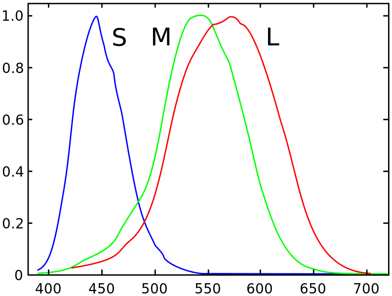
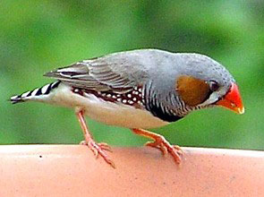

生物 - 点子集
视觉
更多谱段的视觉细胞
如果人的眼睛中除了处理三种波段的细胞，还有另外的处理其他种类的视锥细胞，那么可以感受更复杂的视觉。
人类的视觉
人感受颜色是通过视锥细胞来实现的，三种视锥细胞为 L 型（长波段，红色），M 型（中间波段，绿色），S 型（短波段，蓝色段）。顺便一只人眼中大约有六七百万的视锥细胞。

仔细的说来，通过视锥细胞里面的三种不同的蛋白质来响应不同的波段的光信号。然后信号被传递到大脑中，经过复杂的过程，才形成了我们的视觉。
从数学上来看，视网膜所做的，是进行零散的傅里叶展开：使用 L，M，S 三组颜色完备基矢来展开光信号。例如某种与位置和时间有关的信号落在视网膜上。我们的视网膜对光信号做了如下处理：
这里面 $r$, $\theta$ 是用来指定在视网膜上的位置的， $\lambda$ 是波长。也就是说除了偏振以外的所有的光信息可以看做一个光谱，与视网膜上的位置有关，并且随着时间变化。使用 L，M，S 三组基矢我们把这个光信息展开了。
然而这是不完备的展开，仅仅是在三色颜色空间的展开。严格来说，我们需要的是一个连续的傅里叶展开。
例如一个例子是四色型视觉（tetrachromacy）。鲫鱼和斑马鱼具有四色型视觉，他们除了能够感受人能感受到的红绿蓝之外，还能感受到紫外波段。1 另外的例子是某些鸟类，例如 斑胸草雀2 ，可以看到紫外，波长短至 300nm。既然谈到了四色型视觉，那么五色型视觉呢？六色型视觉呢？


人类的四色型视觉
实际上有人类四色型视觉的案例。3 然而，在人的身上，即便我们有了响应第四种波段的光的细胞，这个信号能否单独的预处理并传递给大脑皮层，需要很多其他的研究需要确认。
有些人可能是潜在的四色型视觉，他们可能比正常人多出一类细胞即 L’ 型，可以感受红绿之间的一个波段。

既然是脑洞文，如果一个人想要看到紫外波段呢？ 一个可能的脑洞是：干细胞->敲掉基因->换上新的蛋白对应的基因->培养成视锥细胞->植入视网膜（替换原来某些视锥细胞）。4 然而这解决了探测器的问题，我们还需要解决信号的传输和处理。倘若新植入的视锥细胞的信号是单独处理并且送往大脑皮层，那么视觉信息的处理会很混乱。最好的情况是，新的信息像 L，M，S 一样具有一定的独立性。这样假定大脑能够处理的话，就可以得到更加详细的频谱信息。5
多色型视觉应用：绘画中的秘密
达芬奇是一名 tetrachromat，具有四色型视觉。他在自己的一副绘画中藏了只有四色型视觉才能看到的秘密。这个秘密只能四色型视觉的人才能知道。达芬奇的后人一直保留着这幅画，但是从某一代之后就不再有四色型视觉。这个秘密在后来被其他人一个人发现了。然后……
就这样。
可控制谱段的视觉
倘若我们的光感受器中的蛋白的响应谱段是可以通过离子浓度（或其他手段）来调节的6 ，这样我们可以控制我们眼睛看到的谱段。
例如我们可以降低溶液浓度来使得蛋白质的敏感谱段像红端移动，这样我们就可以在夜晚需要活动的时候调节到这个模式，从而看到红外的光谱。
感受连续谱段的视觉细胞
更大面积的视网膜感光细胞分布
人的眼睛中存在一种 Muller 细胞，这种细胞可以起到光波导的作用。
Muller 细胞
我们可以设想这样一种人眼，视网膜整个内壁都是视细胞并且与视神经相连，在这些光波导的某些地方使用“分光镜”，将光线部分导入到视网膜的其他地方。（还有一部分用来观测光在眼球内的散射从而判断信息。）
而这些其他地方的视细胞或许有特殊性，例如可以探测其他波段的信息。这样大脑皮层视觉区可以有一部分专门处理这个。平时我们并不会用到，但是如果在这些波段出现了异常，我们可以感受到，并且专注在这些波段。
感受到红外波段的应用
视网膜的内壁某些可以感受红外波段的细胞，如果身边的红外热源突然发生变化，我们就可以感受到并且去观察。
例如有人从背后接近自己，我们这部分细胞会感受到有个热源越来越强，说明在靠近自己，这样我们就知道，背后有人！武林高手无法从背后被偷袭什么的，一定是这样的。
偏振
有的复眼可以看到偏振。7 偏振用处很大，通过调节偏振，我们可以消除影响我们视觉的反射光等等。
参考即注释
- 一本比较好的书是寿天德的 《视觉处理的脑机制》 。这本书比较详细地论证了人的视觉机制。
-
Jordan, G.; Mollon, J. D. (1993). “A study of women heterozygous for colour deficiencies”. Vision research 33 (11): 1495–1508. ↩
-
感谢果壳水群中的各位，特别是@飘飘提供的干细胞思路。 ↩
-
此处忽略视觉处理时 LGN，眼优势柱，XY 体系这些细节。倘若考虑的话，XY 体系和眼优势柱会非常有用。XY 这里可以用来分开传递信息，视优势柱可以设计出更好的时间相应（变成相空间的视优势柱）等等。 ↩
-
蛋白质构型是取了在某个环境中的能量（自由能）极值点，改变溶液可以改变周围电势能的分布，如此改变蛋白质构型的可能性也不是没有的。或者简单的模仿细胞膜上的离子通道。 ↩